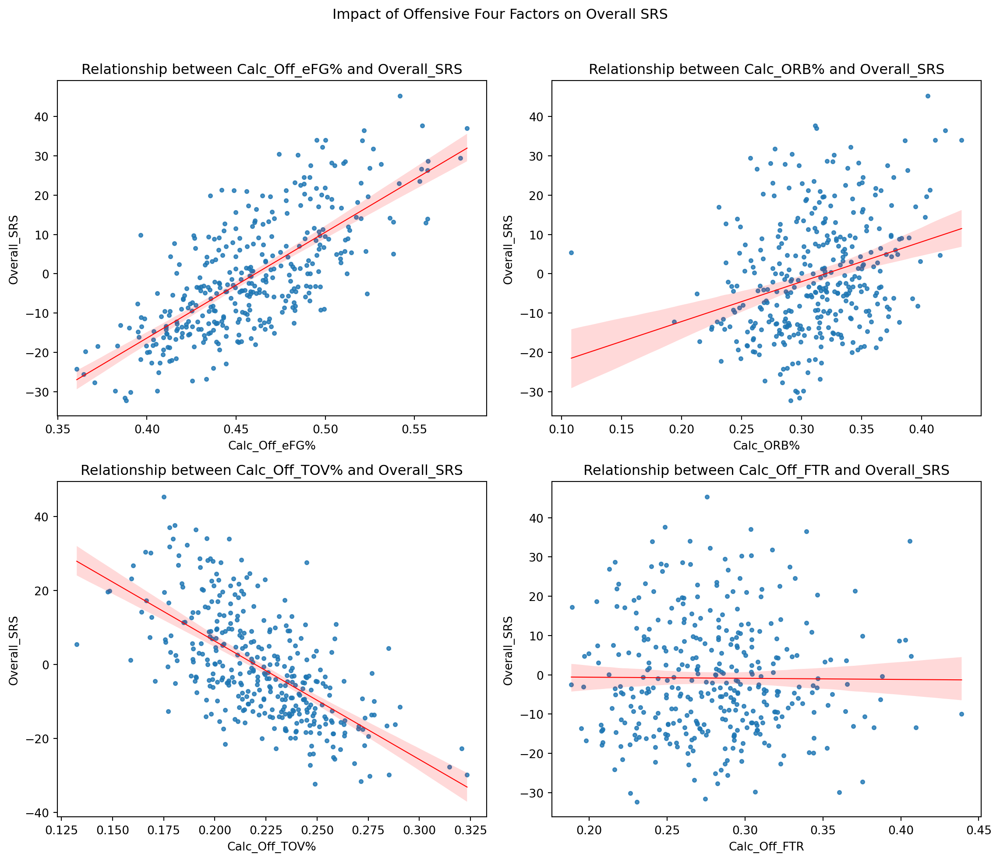
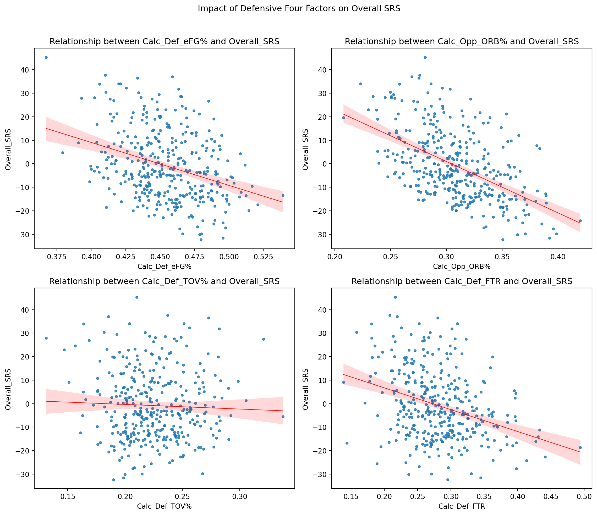

Statistical Analysis of 2024 Women’s College Basketball
sports
data
Published
May 22, 2023
Code
# Create dataframe for offensive and defensive team statsteam_stats = pd.merge(raw_stats, raw_opponent_stats, on="School", how="inner")team_stats.columns = team_stats.columns.str.replace('_x', '')team_stats = team_stats[['School', 'Overall_SRS', 'Overall_SOS', 'Overall_W', 'Overall_L','Team_FG', 'Team_FGA', 'Team_3P', 'Team_3PA', 'Team_FTA', 'Team_ORB', 'Team_TRB', 'Team_TOV','Opponent_FG', 'Opponent_FGA', 'Opponent_3P', 'Opponent_3PA', 'Opponent_FTA', 'Opponent_ORB', 'Opponent_TRB', 'Opponent_TOV']].copy()# Set datatypeteam_stats = team_stats.astype({'Overall_SRS': 'float','Overall_SOS': 'float','Overall_W': 'int','Overall_L': 'int'})# Cast all other columns to floatcast_to_float = team_stats.columns[5:]team_stats[cast_to_float] = team_stats[cast_to_float].astype(float)team_stats.dtypes# Divide teams into SRS percentilebins = [0, 0.25, 0.5, 0.8, 1]labels = ['Bottom 25%', '25th-50th %', '50th-80th %', 'Top 20%']team_stats['Pct_Group'] = pd.qcut(team_stats['Overall_SRS'], q=bins, labels=labels)
Statistical Analysis of 2024 Women’s College Basketball
Unlike Men’s College Basketball, statistical analysis on the Women’s game is relatively sparse. Since analysis for the Men’s game is widely available and well documented, I’ve applied some of the most popular methodologies to basic team stats for the Women’s game to better understand how strongly corralated the four factors are with the teams simple rating system, measure the offsive and defensive efficiency of each team, and visualize the strengths (and weaknesses) of each team. Let’s dive in!
Four Factors of Basketball
The Four Factors designed by Dean Oliver in “Basketball on Paper” is considered the moneyball of Basketball to measure a team’s success. While these stats can be found calculated in Sports Reference’s Advanced School Stats, we’ll calculated them to see how they correlate with the teams simple rating system then use the four factors to measure the offensive and defensive efficiency of each team.
These four factors are:
Shooting the ball well measured by effective Field Goal % (eFG%)
Code
# Calculate both offensive and defensive effective field goal percentageteam_stats['Calc_Off_eFG%'] = (team_stats['Team_FG'] +0.5* team_stats['Team_3P']) / team_stats['Team_FGA']team_stats['Calc_Def_eFG%'] = (team_stats['Opponent_FG'] +0.5* team_stats['Opponent_3P']) / team_stats['Opponent_FGA']
The effective field goal % captures the teams ability to shoot the ball. Because at the end of the game, the team with the most points wins. This is calculated as Field Goals Made + 0.5 * 3-pointers Made) / Field Goals Attempted. Unlike FG%, this calculation adds 50% more credit for 3-pointers made, since they are worth more points.
Offensive rebounds are a second change at scoring. So of the total rebounds happening while a team is on offense, how many are the offensive team getting them.
Free throws are yet another attempt to score. So getting fouled Free Throw Rate = Free Throws Attempts / Field Goal Attempts
Relationship of Four Factors with Overall SRS
Once each of these metrics has been calculated, let’s evaulate the impact each metric has on the overall simple rating system of the team.
Code
# Set up the figure with four subplotsfig, axes = plt.subplots(2, 2, figsize=(12, 10)) # 2x2 gridoff_four_factors = team_stats[['School', 'Overall_SRS', 'Calc_Off_eFG%', 'Calc_ORB%', 'Calc_Off_TOV%', 'Calc_Off_FTR']]# List of offensive factorsoffensive_factors = ['Calc_Off_eFG%', 'Calc_ORB%', 'Calc_Off_TOV%', 'Calc_Off_FTR']# Loop through the factors and plot each one against 'Overall_SRS'for ax, factor inzip(axes.flatten(), offensive_factors): sns.regplot( data=off_four_factors, x=factor, y='Overall_SRS', ax=ax, scatter_kws={'s': 10}, line_kws={'color': 'red', 'linewidth': 0.8} ) ax.set_title(f'Relationship between {factor} and Overall_SRS')plt.suptitle('Impact of Offensive Four Factors on Overall SRS', y=1.02)plt.tight_layout()plt.show()

Code
# Set up the figure with four subplotsfig, axes = plt.subplots(2, 2, figsize=(12, 10)) # 2x2 griddef_four_factors = team_stats[['School', 'Overall_SRS', 'Calc_Def_eFG%', 'Calc_Opp_ORB%', 'Calc_Def_TOV%', 'Calc_Def_FTR']]# List of defensive factorsdefensive_factors = ['Calc_Def_eFG%', 'Calc_Opp_ORB%', 'Calc_Def_TOV%', 'Calc_Def_FTR']# Loop through the factors and plot each one against 'Overall_SRS'for ax, factor inzip(axes.flatten(), defensive_factors): sns.regplot( data=def_four_factors, x=factor, y='Overall_SRS', ax=ax, scatter_kws={'s': 10}, line_kws={'color': 'red', 'linewidth': 0.8} ) ax.set_title(f'Relationship between {factor} and Overall_SRS')plt.suptitle('Impact of Defensive Four Factors on Overall SRS', y=1.02)plt.tight_layout()plt.show()

In all calculations, I use per game average since as a basketball fan, it allows me to reason about the data and catch mistakes easier. For example, if free throw attemps is 78, I’m able to recognize and issue witih my data. To increase accuracy calculations could be done on a per game basis before averaged out.
Sources: https://kenpom.com/blog/four-factors/
Offensive & Defensive Efficiency
In order for us to measure the offensive and defensive efficiency of each team, we’ll first calculate these stats for each team, this is their offense. For defense, we’ll calculate how well their opponents do in each of these stats when playing against them.
Once we have all four factors calculated, both for offense and defense, we can see how each factor impacts their SRS rating.
In many of the analysis, we’ll also compare Sports Reference’s Simple Rating System (SRS) with the stats that we calculate. The Overall SRS, “takes into account average point differential and strength of schedule”, where zero is average and a high positive number signals a strong team.